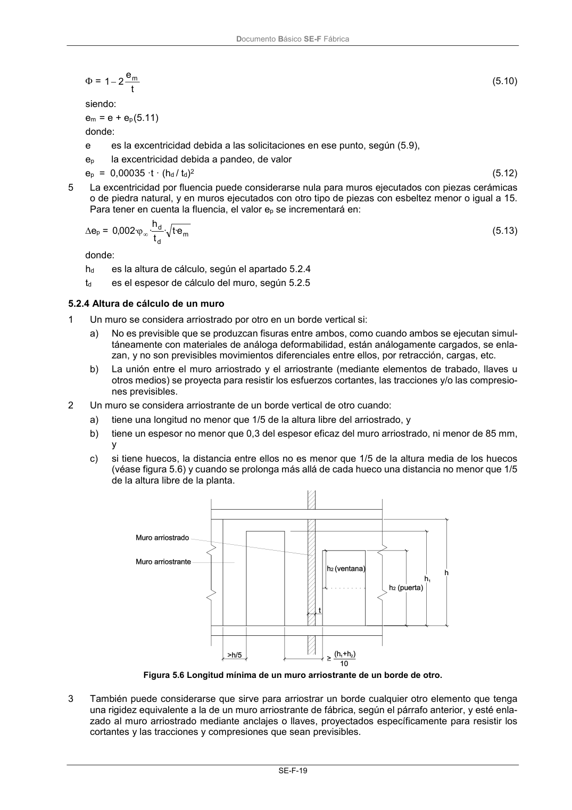
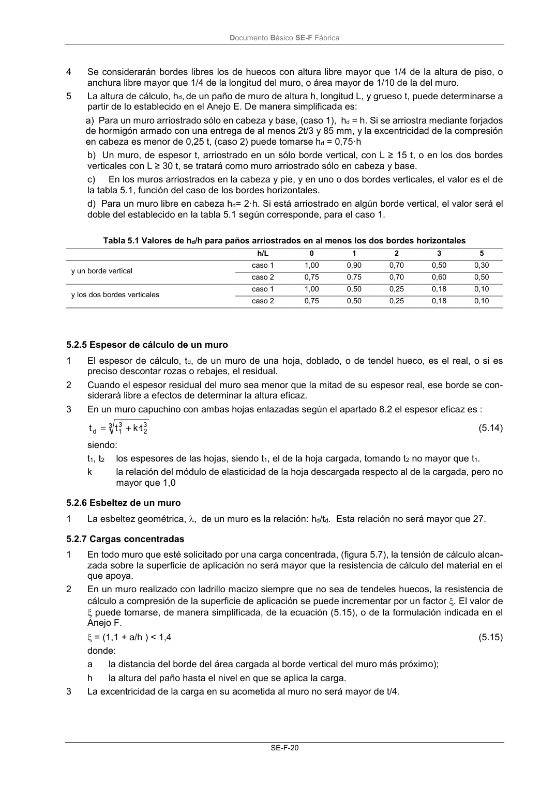

DB-SE-F · 5.2.4 Altura de cálculo de un muro · versión 2019-12-20 · capa oficial
Formatos: JSON compacto · Markdown · PDF fuente
Ámbito del documento · texto del ámbito · documento y tablas
ID técnico a0053 · PDF pág. 23-24 · jerarquía no validada por persona · contrastado con el literal de la página 23 (candidato tipográfico); no validado por persona · padre: raíz
5.2.4 Altura de cálculo de un muro 1 Un muro se considera arriostrado por otro en un borde vertical si: a) No es previsible que se produzcan fisuras entre ambos, como cuando ambos se ejecutan simul- táneamente con materiales de análoga deformabilidad, están análogamente cargados, se enla- zan, y no son previsibles movimientos diferenciales entre ellos, por retracción, cargas, etc. b) La unión entre el muro arriostrado y el arriostrante (mediante elementos de trabado, llaves u otros medios) se proyecta para resistir los esfuerzos cortantes, las tracciones y/o las compresio- nes previsibles. 2 Un muro se considera arriostrante de un borde vertical de otro cuando: a) tiene una longitud no menor que 1/5 de la altura libre del arriostrado, y b) tiene un espesor no menor que 0,3 del espesor eficaz del muro arriostrado, ni menor de 85 mm, y c) si tiene huecos, la distancia entre ellos no es menor que 1/5 de la altura media de los huecos (véase figura 5.6) y cuando se prolonga más allá de cada hueco una distancia no menor que 1/5 de la altura libre de la planta. Figura 5.6 Longitud mínima de un muro arriostrante de un borde de otro. 3 También puede considerarse que sirve para arriostrar un borde cualquier otro elemento que tenga una rigidez equivalente a la de un muro arriostrante de fábrica, según el párrafo anterior, y esté enla- zado al muro arriostrado mediante anclajes o llaves, proyectados específicamente para resistir los cortantes y las tracciones y compresiones que sean previsibles. Documento Básico SE-F Fábrica SE-F-20 4 Se considerarán bordes libres los de huecos con altura libre mayor que 1/4 de la altura de piso, o anchura libre mayor que 1/4 de la longitud del muro, o área mayor de 1/10 de la del muro. 5 La altura de cálculo, hd,de un paño de muro de altura h, longitud L, y grueso t, puede determinarse a partir de lo establecido en el Anejo E. De manera simplificada es: a) Para un muro arriostrado sólo en cabeza y base, (caso 1), hd = h. Si se arriostra mediante forjados de hormigón armado con una entrega de al menos 2t/3 y 85 mm, y la excentricidad de la compresión en cabeza es menor de 0,25 t, (caso 2) puede tomarse hd = 0,75·h b) Un muro, de espesor t, arriostrado en un sólo borde vertical, con L ≥ 15 t, o en los dos bordes verticales con L ≥ 30 t, se tratará como muro arriostrado sólo en cabeza y base. c) En los muros arriostrados en la cabeza y pie, y en uno o dos bordes verticales, el valor es el de la tabla 5.1, función del caso de los bordes horizontales. d) Para un muro libre en cabeza hd= 2·h. Si está arriostrado en algún borde vertical, el valor será el doble del establecido en la tabla 5.1 según corresponde, para el caso 1. Tabla 5.1 Valores de hd/h para paños arriostrados en al menos los dos bordes horizontales h/L 0 1 2 3 5 y un borde vertical caso 1 1,00 0,90 0,70 0,50 0,30 caso 2 0,75 0,75 0,70 0,60 0,50 y los dos bordes verticales caso 1 1,00 0,50 0,25 0,18 0,10 caso 2 0,75 0,50 0,25 0,18 0,10


PDF fuente redistribuible: copia fiel enlazada en esta página (SHA256 verificado).